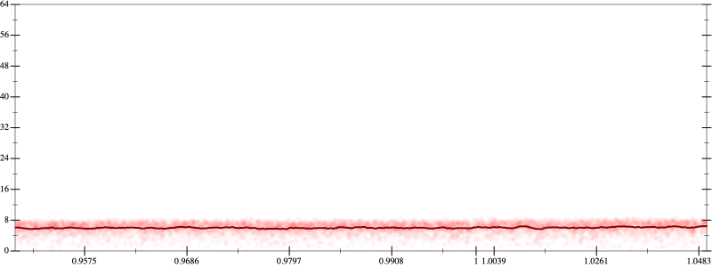
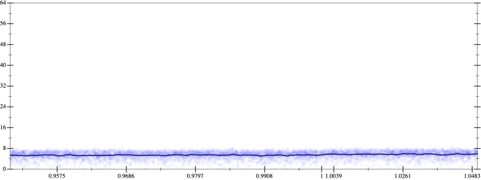
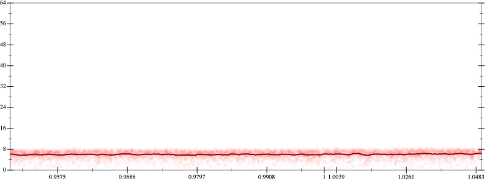
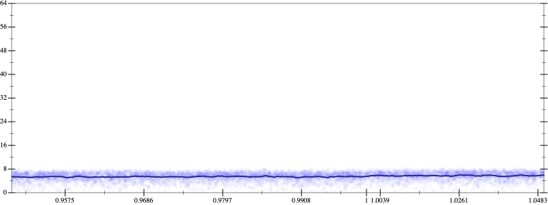

Initial program 6.0
\[\left(\left(\left(\left(\left(\left(\left(\left(\left(\left(\left(1.0 + -15.0 \cdot x\right) + 52.5 \cdot \left(x \cdot x\right)\right) + -75.833333 \cdot \left(\left(x \cdot x\right) \cdot x\right)\right) + 56.875 \cdot \left(\left(\left(x \cdot x\right) \cdot x\right) \cdot x\right)\right) + -25.025 \cdot \left(\left(\left(\left(x \cdot x\right) \cdot x\right) \cdot x\right) \cdot x\right)\right) + 6.951389 \cdot \left(\left(\left(\left(\left(x \cdot x\right) \cdot x\right) \cdot x\right) \cdot x\right) \cdot x\right)\right) + -1.276786 \cdot \left(\left(\left(\left(\left(\left(x \cdot x\right) \cdot x\right) \cdot x\right) \cdot x\right) \cdot x\right) \cdot x\right)\right) + 0.159598 \cdot \left(\left(\left(\left(\left(\left(\left(x \cdot x\right) \cdot x\right) \cdot x\right) \cdot x\right) \cdot x\right) \cdot x\right) \cdot x\right)\right) + -0.013792 \cdot \left(\left(\left(\left(\left(\left(\left(\left(x \cdot x\right) \cdot x\right) \cdot x\right) \cdot x\right) \cdot x\right) \cdot x\right) \cdot x\right) \cdot x\right)\right) + 0.000828 \cdot \left(\left(\left(\left(\left(\left(\left(\left(\left(x \cdot x\right) \cdot x\right) \cdot x\right) \cdot x\right) \cdot x\right) \cdot x\right) \cdot x\right) \cdot x\right) \cdot x\right)\right) + -3.4 \cdot 10^{-05} \cdot \left(\left(\left(\left(\left(\left(\left(\left(\left(\left(x \cdot x\right) \cdot x\right) \cdot x\right) \cdot x\right) \cdot x\right) \cdot x\right) \cdot x\right) \cdot x\right) \cdot x\right) \cdot x\right)\right) + 10^{-06} \cdot \left(\left(\left(\left(\left(\left(\left(\left(\left(\left(\left(x \cdot x\right) \cdot x\right) \cdot x\right) \cdot x\right) \cdot x\right) \cdot x\right) \cdot x\right) \cdot x\right) \cdot x\right) \cdot x\right) \cdot x\right)\]
- Using strategy
rm Applied associate-+l+6.0
\[\leadsto \left(\left(\left(\left(\left(\left(\left(\color{blue}{\left(\left(\left(1.0 + -15.0 \cdot x\right) + 52.5 \cdot \left(x \cdot x\right)\right) + \left(-75.833333 \cdot \left(\left(x \cdot x\right) \cdot x\right) + 56.875 \cdot \left(\left(\left(x \cdot x\right) \cdot x\right) \cdot x\right)\right)\right)} + -25.025 \cdot \left(\left(\left(\left(x \cdot x\right) \cdot x\right) \cdot x\right) \cdot x\right)\right) + 6.951389 \cdot \left(\left(\left(\left(\left(x \cdot x\right) \cdot x\right) \cdot x\right) \cdot x\right) \cdot x\right)\right) + -1.276786 \cdot \left(\left(\left(\left(\left(\left(x \cdot x\right) \cdot x\right) \cdot x\right) \cdot x\right) \cdot x\right) \cdot x\right)\right) + 0.159598 \cdot \left(\left(\left(\left(\left(\left(\left(x \cdot x\right) \cdot x\right) \cdot x\right) \cdot x\right) \cdot x\right) \cdot x\right) \cdot x\right)\right) + -0.013792 \cdot \left(\left(\left(\left(\left(\left(\left(\left(x \cdot x\right) \cdot x\right) \cdot x\right) \cdot x\right) \cdot x\right) \cdot x\right) \cdot x\right) \cdot x\right)\right) + 0.000828 \cdot \left(\left(\left(\left(\left(\left(\left(\left(\left(x \cdot x\right) \cdot x\right) \cdot x\right) \cdot x\right) \cdot x\right) \cdot x\right) \cdot x\right) \cdot x\right) \cdot x\right)\right) + -3.4 \cdot 10^{-05} \cdot \left(\left(\left(\left(\left(\left(\left(\left(\left(\left(x \cdot x\right) \cdot x\right) \cdot x\right) \cdot x\right) \cdot x\right) \cdot x\right) \cdot x\right) \cdot x\right) \cdot x\right) \cdot x\right)\right) + 10^{-06} \cdot \left(\left(\left(\left(\left(\left(\left(\left(\left(\left(\left(x \cdot x\right) \cdot x\right) \cdot x\right) \cdot x\right) \cdot x\right) \cdot x\right) \cdot x\right) \cdot x\right) \cdot x\right) \cdot x\right) \cdot x\right)\]
Applied simplify5.5
\[\leadsto \left(\left(\left(\left(\left(\left(\left(\left(\left(\left(1.0 + -15.0 \cdot x\right) + 52.5 \cdot \left(x \cdot x\right)\right) + \color{blue}{{x}^{3} \cdot \left(56.875 \cdot x + -75.833333\right)}\right) + -25.025 \cdot \left(\left(\left(\left(x \cdot x\right) \cdot x\right) \cdot x\right) \cdot x\right)\right) + 6.951389 \cdot \left(\left(\left(\left(\left(x \cdot x\right) \cdot x\right) \cdot x\right) \cdot x\right) \cdot x\right)\right) + -1.276786 \cdot \left(\left(\left(\left(\left(\left(x \cdot x\right) \cdot x\right) \cdot x\right) \cdot x\right) \cdot x\right) \cdot x\right)\right) + 0.159598 \cdot \left(\left(\left(\left(\left(\left(\left(x \cdot x\right) \cdot x\right) \cdot x\right) \cdot x\right) \cdot x\right) \cdot x\right) \cdot x\right)\right) + -0.013792 \cdot \left(\left(\left(\left(\left(\left(\left(\left(x \cdot x\right) \cdot x\right) \cdot x\right) \cdot x\right) \cdot x\right) \cdot x\right) \cdot x\right) \cdot x\right)\right) + 0.000828 \cdot \left(\left(\left(\left(\left(\left(\left(\left(\left(x \cdot x\right) \cdot x\right) \cdot x\right) \cdot x\right) \cdot x\right) \cdot x\right) \cdot x\right) \cdot x\right) \cdot x\right)\right) + -3.4 \cdot 10^{-05} \cdot \left(\left(\left(\left(\left(\left(\left(\left(\left(\left(x \cdot x\right) \cdot x\right) \cdot x\right) \cdot x\right) \cdot x\right) \cdot x\right) \cdot x\right) \cdot x\right) \cdot x\right) \cdot x\right)\right) + 10^{-06} \cdot \left(\left(\left(\left(\left(\left(\left(\left(\left(\left(\left(x \cdot x\right) \cdot x\right) \cdot x\right) \cdot x\right) \cdot x\right) \cdot x\right) \cdot x\right) \cdot x\right) \cdot x\right) \cdot x\right) \cdot x\right)\]
- Using strategy
rm Applied flip3-+5.5
\[\leadsto \left(\left(\left(\left(\left(\left(\color{blue}{\frac{{\left(\left(\left(1.0 + -15.0 \cdot x\right) + 52.5 \cdot \left(x \cdot x\right)\right) + {x}^{3} \cdot \left(56.875 \cdot x + -75.833333\right)\right)}^{3} + {\left(-25.025 \cdot \left(\left(\left(\left(x \cdot x\right) \cdot x\right) \cdot x\right) \cdot x\right)\right)}^{3}}{\left(\left(\left(1.0 + -15.0 \cdot x\right) + 52.5 \cdot \left(x \cdot x\right)\right) + {x}^{3} \cdot \left(56.875 \cdot x + -75.833333\right)\right) \cdot \left(\left(\left(1.0 + -15.0 \cdot x\right) + 52.5 \cdot \left(x \cdot x\right)\right) + {x}^{3} \cdot \left(56.875 \cdot x + -75.833333\right)\right) + \left(\left(-25.025 \cdot \left(\left(\left(\left(x \cdot x\right) \cdot x\right) \cdot x\right) \cdot x\right)\right) \cdot \left(-25.025 \cdot \left(\left(\left(\left(x \cdot x\right) \cdot x\right) \cdot x\right) \cdot x\right)\right) - \left(\left(\left(1.0 + -15.0 \cdot x\right) + 52.5 \cdot \left(x \cdot x\right)\right) + {x}^{3} \cdot \left(56.875 \cdot x + -75.833333\right)\right) \cdot \left(-25.025 \cdot \left(\left(\left(\left(x \cdot x\right) \cdot x\right) \cdot x\right) \cdot x\right)\right)\right)}} + 6.951389 \cdot \left(\left(\left(\left(\left(x \cdot x\right) \cdot x\right) \cdot x\right) \cdot x\right) \cdot x\right)\right) + -1.276786 \cdot \left(\left(\left(\left(\left(\left(x \cdot x\right) \cdot x\right) \cdot x\right) \cdot x\right) \cdot x\right) \cdot x\right)\right) + 0.159598 \cdot \left(\left(\left(\left(\left(\left(\left(x \cdot x\right) \cdot x\right) \cdot x\right) \cdot x\right) \cdot x\right) \cdot x\right) \cdot x\right)\right) + -0.013792 \cdot \left(\left(\left(\left(\left(\left(\left(\left(x \cdot x\right) \cdot x\right) \cdot x\right) \cdot x\right) \cdot x\right) \cdot x\right) \cdot x\right) \cdot x\right)\right) + 0.000828 \cdot \left(\left(\left(\left(\left(\left(\left(\left(\left(x \cdot x\right) \cdot x\right) \cdot x\right) \cdot x\right) \cdot x\right) \cdot x\right) \cdot x\right) \cdot x\right) \cdot x\right)\right) + -3.4 \cdot 10^{-05} \cdot \left(\left(\left(\left(\left(\left(\left(\left(\left(\left(x \cdot x\right) \cdot x\right) \cdot x\right) \cdot x\right) \cdot x\right) \cdot x\right) \cdot x\right) \cdot x\right) \cdot x\right) \cdot x\right)\right) + 10^{-06} \cdot \left(\left(\left(\left(\left(\left(\left(\left(\left(\left(\left(x \cdot x\right) \cdot x\right) \cdot x\right) \cdot x\right) \cdot x\right) \cdot x\right) \cdot x\right) \cdot x\right) \cdot x\right) \cdot x\right) \cdot x\right)\]
Applied simplify5.5
\[\leadsto \left(\left(\left(\left(\left(\left(\frac{{\left(\left(\left(1.0 + -15.0 \cdot x\right) + 52.5 \cdot \left(x \cdot x\right)\right) + {x}^{3} \cdot \left(56.875 \cdot x + -75.833333\right)\right)}^{3} + {\left(-25.025 \cdot \left(\left(\left(\left(x \cdot x\right) \cdot x\right) \cdot x\right) \cdot x\right)\right)}^{3}}{\color{blue}{\left({x}^{3} \cdot \left(-75.833333 + 56.875 \cdot x\right) + \left(\left(x \cdot 52.5\right) \cdot x + \left(x \cdot -15.0 + 1.0\right)\right)\right) \cdot \left(\left(\left(-25.025 \cdot x\right) \cdot \left(x \cdot x\right)\right) \cdot \left(-x \cdot x\right) + \left({x}^{3} \cdot \left(-75.833333 + 56.875 \cdot x\right) + \left(\left(x \cdot 52.5\right) \cdot x + \left(x \cdot -15.0 + 1.0\right)\right)\right)\right) + \left(\left(x \cdot x\right) \cdot \left(\left(-25.025 \cdot x\right) \cdot \left(x \cdot x\right)\right)\right) \cdot \left(\left(x \cdot x\right) \cdot \left(\left(-25.025 \cdot x\right) \cdot \left(x \cdot x\right)\right)\right)}} + 6.951389 \cdot \left(\left(\left(\left(\left(x \cdot x\right) \cdot x\right) \cdot x\right) \cdot x\right) \cdot x\right)\right) + -1.276786 \cdot \left(\left(\left(\left(\left(\left(x \cdot x\right) \cdot x\right) \cdot x\right) \cdot x\right) \cdot x\right) \cdot x\right)\right) + 0.159598 \cdot \left(\left(\left(\left(\left(\left(\left(x \cdot x\right) \cdot x\right) \cdot x\right) \cdot x\right) \cdot x\right) \cdot x\right) \cdot x\right)\right) + -0.013792 \cdot \left(\left(\left(\left(\left(\left(\left(\left(x \cdot x\right) \cdot x\right) \cdot x\right) \cdot x\right) \cdot x\right) \cdot x\right) \cdot x\right) \cdot x\right)\right) + 0.000828 \cdot \left(\left(\left(\left(\left(\left(\left(\left(\left(x \cdot x\right) \cdot x\right) \cdot x\right) \cdot x\right) \cdot x\right) \cdot x\right) \cdot x\right) \cdot x\right) \cdot x\right)\right) + -3.4 \cdot 10^{-05} \cdot \left(\left(\left(\left(\left(\left(\left(\left(\left(\left(x \cdot x\right) \cdot x\right) \cdot x\right) \cdot x\right) \cdot x\right) \cdot x\right) \cdot x\right) \cdot x\right) \cdot x\right) \cdot x\right)\right) + 10^{-06} \cdot \left(\left(\left(\left(\left(\left(\left(\left(\left(\left(\left(x \cdot x\right) \cdot x\right) \cdot x\right) \cdot x\right) \cdot x\right) \cdot x\right) \cdot x\right) \cdot x\right) \cdot x\right) \cdot x\right) \cdot x\right)\]
- Using strategy
rm Applied add-log-exp5.5
\[\leadsto \left(\left(\left(\left(\left(\left(\frac{{\left(\left(\left(1.0 + -15.0 \cdot x\right) + 52.5 \cdot \left(x \cdot x\right)\right) + {x}^{3} \cdot \left(56.875 \cdot x + -75.833333\right)\right)}^{3} + {\left(-25.025 \cdot \left(\left(\left(\left(x \cdot x\right) \cdot x\right) \cdot x\right) \cdot x\right)\right)}^{3}}{\left({x}^{3} \cdot \left(-75.833333 + 56.875 \cdot x\right) + \left(\left(x \cdot 52.5\right) \cdot x + \left(x \cdot -15.0 + 1.0\right)\right)\right) \cdot \left(\left(\left(-25.025 \cdot x\right) \cdot \left(x \cdot x\right)\right) \cdot \left(-x \cdot x\right) + \left({x}^{3} \cdot \left(-75.833333 + 56.875 \cdot x\right) + \left(\left(x \cdot 52.5\right) \cdot x + \left(x \cdot -15.0 + 1.0\right)\right)\right)\right) + \left(\left(x \cdot x\right) \cdot \left(\left(-25.025 \cdot x\right) \cdot \left(x \cdot x\right)\right)\right) \cdot \left(\left(x \cdot x\right) \cdot \left(\left(-25.025 \cdot x\right) \cdot \left(x \cdot x\right)\right)\right)} + 6.951389 \cdot \left(\left(\left(\left(\left(x \cdot x\right) \cdot x\right) \cdot x\right) \cdot x\right) \cdot x\right)\right) + \color{blue}{\log \left(e^{-1.276786 \cdot \left(\left(\left(\left(\left(\left(x \cdot x\right) \cdot x\right) \cdot x\right) \cdot x\right) \cdot x\right) \cdot x\right)}\right)}\right) + 0.159598 \cdot \left(\left(\left(\left(\left(\left(\left(x \cdot x\right) \cdot x\right) \cdot x\right) \cdot x\right) \cdot x\right) \cdot x\right) \cdot x\right)\right) + -0.013792 \cdot \left(\left(\left(\left(\left(\left(\left(\left(x \cdot x\right) \cdot x\right) \cdot x\right) \cdot x\right) \cdot x\right) \cdot x\right) \cdot x\right) \cdot x\right)\right) + 0.000828 \cdot \left(\left(\left(\left(\left(\left(\left(\left(\left(x \cdot x\right) \cdot x\right) \cdot x\right) \cdot x\right) \cdot x\right) \cdot x\right) \cdot x\right) \cdot x\right) \cdot x\right)\right) + -3.4 \cdot 10^{-05} \cdot \left(\left(\left(\left(\left(\left(\left(\left(\left(\left(x \cdot x\right) \cdot x\right) \cdot x\right) \cdot x\right) \cdot x\right) \cdot x\right) \cdot x\right) \cdot x\right) \cdot x\right) \cdot x\right)\right) + 10^{-06} \cdot \left(\left(\left(\left(\left(\left(\left(\left(\left(\left(\left(x \cdot x\right) \cdot x\right) \cdot x\right) \cdot x\right) \cdot x\right) \cdot x\right) \cdot x\right) \cdot x\right) \cdot x\right) \cdot x\right) \cdot x\right)\]
Applied add-log-exp5.5
\[\leadsto \left(\left(\left(\left(\left(\color{blue}{\log \left(e^{\frac{{\left(\left(\left(1.0 + -15.0 \cdot x\right) + 52.5 \cdot \left(x \cdot x\right)\right) + {x}^{3} \cdot \left(56.875 \cdot x + -75.833333\right)\right)}^{3} + {\left(-25.025 \cdot \left(\left(\left(\left(x \cdot x\right) \cdot x\right) \cdot x\right) \cdot x\right)\right)}^{3}}{\left({x}^{3} \cdot \left(-75.833333 + 56.875 \cdot x\right) + \left(\left(x \cdot 52.5\right) \cdot x + \left(x \cdot -15.0 + 1.0\right)\right)\right) \cdot \left(\left(\left(-25.025 \cdot x\right) \cdot \left(x \cdot x\right)\right) \cdot \left(-x \cdot x\right) + \left({x}^{3} \cdot \left(-75.833333 + 56.875 \cdot x\right) + \left(\left(x \cdot 52.5\right) \cdot x + \left(x \cdot -15.0 + 1.0\right)\right)\right)\right) + \left(\left(x \cdot x\right) \cdot \left(\left(-25.025 \cdot x\right) \cdot \left(x \cdot x\right)\right)\right) \cdot \left(\left(x \cdot x\right) \cdot \left(\left(-25.025 \cdot x\right) \cdot \left(x \cdot x\right)\right)\right)} + 6.951389 \cdot \left(\left(\left(\left(\left(x \cdot x\right) \cdot x\right) \cdot x\right) \cdot x\right) \cdot x\right)}\right)} + \log \left(e^{-1.276786 \cdot \left(\left(\left(\left(\left(\left(x \cdot x\right) \cdot x\right) \cdot x\right) \cdot x\right) \cdot x\right) \cdot x\right)}\right)\right) + 0.159598 \cdot \left(\left(\left(\left(\left(\left(\left(x \cdot x\right) \cdot x\right) \cdot x\right) \cdot x\right) \cdot x\right) \cdot x\right) \cdot x\right)\right) + -0.013792 \cdot \left(\left(\left(\left(\left(\left(\left(\left(x \cdot x\right) \cdot x\right) \cdot x\right) \cdot x\right) \cdot x\right) \cdot x\right) \cdot x\right) \cdot x\right)\right) + 0.000828 \cdot \left(\left(\left(\left(\left(\left(\left(\left(\left(x \cdot x\right) \cdot x\right) \cdot x\right) \cdot x\right) \cdot x\right) \cdot x\right) \cdot x\right) \cdot x\right) \cdot x\right)\right) + -3.4 \cdot 10^{-05} \cdot \left(\left(\left(\left(\left(\left(\left(\left(\left(\left(x \cdot x\right) \cdot x\right) \cdot x\right) \cdot x\right) \cdot x\right) \cdot x\right) \cdot x\right) \cdot x\right) \cdot x\right) \cdot x\right)\right) + 10^{-06} \cdot \left(\left(\left(\left(\left(\left(\left(\left(\left(\left(\left(x \cdot x\right) \cdot x\right) \cdot x\right) \cdot x\right) \cdot x\right) \cdot x\right) \cdot x\right) \cdot x\right) \cdot x\right) \cdot x\right) \cdot x\right)\]
Applied sum-log5.5
\[\leadsto \left(\left(\left(\left(\color{blue}{\log \left(e^{\frac{{\left(\left(\left(1.0 + -15.0 \cdot x\right) + 52.5 \cdot \left(x \cdot x\right)\right) + {x}^{3} \cdot \left(56.875 \cdot x + -75.833333\right)\right)}^{3} + {\left(-25.025 \cdot \left(\left(\left(\left(x \cdot x\right) \cdot x\right) \cdot x\right) \cdot x\right)\right)}^{3}}{\left({x}^{3} \cdot \left(-75.833333 + 56.875 \cdot x\right) + \left(\left(x \cdot 52.5\right) \cdot x + \left(x \cdot -15.0 + 1.0\right)\right)\right) \cdot \left(\left(\left(-25.025 \cdot x\right) \cdot \left(x \cdot x\right)\right) \cdot \left(-x \cdot x\right) + \left({x}^{3} \cdot \left(-75.833333 + 56.875 \cdot x\right) + \left(\left(x \cdot 52.5\right) \cdot x + \left(x \cdot -15.0 + 1.0\right)\right)\right)\right) + \left(\left(x \cdot x\right) \cdot \left(\left(-25.025 \cdot x\right) \cdot \left(x \cdot x\right)\right)\right) \cdot \left(\left(x \cdot x\right) \cdot \left(\left(-25.025 \cdot x\right) \cdot \left(x \cdot x\right)\right)\right)} + 6.951389 \cdot \left(\left(\left(\left(\left(x \cdot x\right) \cdot x\right) \cdot x\right) \cdot x\right) \cdot x\right)} \cdot e^{-1.276786 \cdot \left(\left(\left(\left(\left(\left(x \cdot x\right) \cdot x\right) \cdot x\right) \cdot x\right) \cdot x\right) \cdot x\right)}\right)} + 0.159598 \cdot \left(\left(\left(\left(\left(\left(\left(x \cdot x\right) \cdot x\right) \cdot x\right) \cdot x\right) \cdot x\right) \cdot x\right) \cdot x\right)\right) + -0.013792 \cdot \left(\left(\left(\left(\left(\left(\left(\left(x \cdot x\right) \cdot x\right) \cdot x\right) \cdot x\right) \cdot x\right) \cdot x\right) \cdot x\right) \cdot x\right)\right) + 0.000828 \cdot \left(\left(\left(\left(\left(\left(\left(\left(\left(x \cdot x\right) \cdot x\right) \cdot x\right) \cdot x\right) \cdot x\right) \cdot x\right) \cdot x\right) \cdot x\right) \cdot x\right)\right) + -3.4 \cdot 10^{-05} \cdot \left(\left(\left(\left(\left(\left(\left(\left(\left(\left(x \cdot x\right) \cdot x\right) \cdot x\right) \cdot x\right) \cdot x\right) \cdot x\right) \cdot x\right) \cdot x\right) \cdot x\right) \cdot x\right)\right) + 10^{-06} \cdot \left(\left(\left(\left(\left(\left(\left(\left(\left(\left(\left(x \cdot x\right) \cdot x\right) \cdot x\right) \cdot x\right) \cdot x\right) \cdot x\right) \cdot x\right) \cdot x\right) \cdot x\right) \cdot x\right) \cdot x\right)\]
- Using strategy
rm Applied unpow35.5
\[\leadsto \left(\left(\left(\left(\log \left(e^{\frac{{\left(\left(\left(1.0 + -15.0 \cdot x\right) + 52.5 \cdot \left(x \cdot x\right)\right) + {x}^{3} \cdot \left(56.875 \cdot x + -75.833333\right)\right)}^{3} + \color{blue}{\left(\left(-25.025 \cdot \left(\left(\left(\left(x \cdot x\right) \cdot x\right) \cdot x\right) \cdot x\right)\right) \cdot \left(-25.025 \cdot \left(\left(\left(\left(x \cdot x\right) \cdot x\right) \cdot x\right) \cdot x\right)\right)\right) \cdot \left(-25.025 \cdot \left(\left(\left(\left(x \cdot x\right) \cdot x\right) \cdot x\right) \cdot x\right)\right)}}{\left({x}^{3} \cdot \left(-75.833333 + 56.875 \cdot x\right) + \left(\left(x \cdot 52.5\right) \cdot x + \left(x \cdot -15.0 + 1.0\right)\right)\right) \cdot \left(\left(\left(-25.025 \cdot x\right) \cdot \left(x \cdot x\right)\right) \cdot \left(-x \cdot x\right) + \left({x}^{3} \cdot \left(-75.833333 + 56.875 \cdot x\right) + \left(\left(x \cdot 52.5\right) \cdot x + \left(x \cdot -15.0 + 1.0\right)\right)\right)\right) + \left(\left(x \cdot x\right) \cdot \left(\left(-25.025 \cdot x\right) \cdot \left(x \cdot x\right)\right)\right) \cdot \left(\left(x \cdot x\right) \cdot \left(\left(-25.025 \cdot x\right) \cdot \left(x \cdot x\right)\right)\right)} + 6.951389 \cdot \left(\left(\left(\left(\left(x \cdot x\right) \cdot x\right) \cdot x\right) \cdot x\right) \cdot x\right)} \cdot e^{-1.276786 \cdot \left(\left(\left(\left(\left(\left(x \cdot x\right) \cdot x\right) \cdot x\right) \cdot x\right) \cdot x\right) \cdot x\right)}\right) + 0.159598 \cdot \left(\left(\left(\left(\left(\left(\left(x \cdot x\right) \cdot x\right) \cdot x\right) \cdot x\right) \cdot x\right) \cdot x\right) \cdot x\right)\right) + -0.013792 \cdot \left(\left(\left(\left(\left(\left(\left(\left(x \cdot x\right) \cdot x\right) \cdot x\right) \cdot x\right) \cdot x\right) \cdot x\right) \cdot x\right) \cdot x\right)\right) + 0.000828 \cdot \left(\left(\left(\left(\left(\left(\left(\left(\left(x \cdot x\right) \cdot x\right) \cdot x\right) \cdot x\right) \cdot x\right) \cdot x\right) \cdot x\right) \cdot x\right) \cdot x\right)\right) + -3.4 \cdot 10^{-05} \cdot \left(\left(\left(\left(\left(\left(\left(\left(\left(\left(x \cdot x\right) \cdot x\right) \cdot x\right) \cdot x\right) \cdot x\right) \cdot x\right) \cdot x\right) \cdot x\right) \cdot x\right) \cdot x\right)\right) + 10^{-06} \cdot \left(\left(\left(\left(\left(\left(\left(\left(\left(\left(\left(x \cdot x\right) \cdot x\right) \cdot x\right) \cdot x\right) \cdot x\right) \cdot x\right) \cdot x\right) \cdot x\right) \cdot x\right) \cdot x\right) \cdot x\right)\]
 
